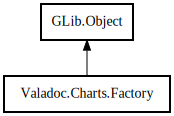

Factory
Object Hierarchy:

Description:
public abstract class Factory :
Object
Content:
Creation methods:
Methods:
- public abstract Edge add_children (Graph graph, Node parent, Node child)
- public abstract Node create_class (Graph graph, Class item)
- public abstract Context create_context (Graph graph)
- public abstract Node create_delegate (Graph graph, Delegate item)
- public abstract Node create_enum (Graph graph, Enum item)
- public abstract Node create_errordomain (Graph graph, ErrorDomain item)
- public abstract Graph create_graph (Node item)
- public abstract Node create_interface (Graph graph, Interface item)
- public abstract Node create_namespace (Graph graph, Namespace item)
- public abstract Node create_struct (Graph graph, Struct item)
- protected Node create_type (Graph graph, Node item)
Inherited Members:
All known members inherited from class GLib.Object